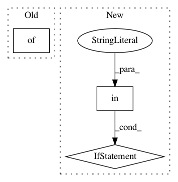

6b89f79d0d43a109b3ff12298a28f221b2377b19,examples/mujoco_all_ray.py,,main,#,168
Before Change
tune.run_experiments({
"{}-{}".format(args.exp_name, policy): {
"run": "mujoco-runner",
"trial_resources": {"cpu": 16},
"config": variant_spec,
"local_dir": local_dir,
"upload_dir": "gs://sac-ray-test/ray/results"
After Change
variant_specs = []
for policy in args.policy:
if "image" in task:
variant_spec = get_variant_spec_image(
universe, domain, task, args.policy)
else:
raise ValueError(
"Should not be here, this was meant to be temporary.")
variant_spec["run_params"]["local_dir"] = local_dir
variant_specs.append(variant_spec)
tune.run_experiments({
In pattern: SUPERPATTERN
Frequency: 3
Non-data size: 3
Instances
Project Name: rail-berkeley/softlearning
Commit Name: 6b89f79d0d43a109b3ff12298a28f221b2377b19
Time: 2018-07-29
Author: kristian.hartikainen@gmail.com
File Name: examples/mujoco_all_ray.py
Class Name:
Method Name: main
Project Name: rail-berkeley/softlearning
Commit Name: 92be5e2d7ece8c25a783e32959361d9dead612ba
Time: 2018-08-25
Author: kristian.hartikainen@gmail.com
File Name: examples/variants.py
Class Name:
Method Name: get_variant_spec_image
Project Name: rail-berkeley/softlearning
Commit Name: 9ec29d178a98cd2648f0af079bfc4aac27693e88
Time: 2018-10-19
Author: hartikainen@berkeley.edu
File Name: examples/multigoal_sac.py
Class Name:
Method Name: main